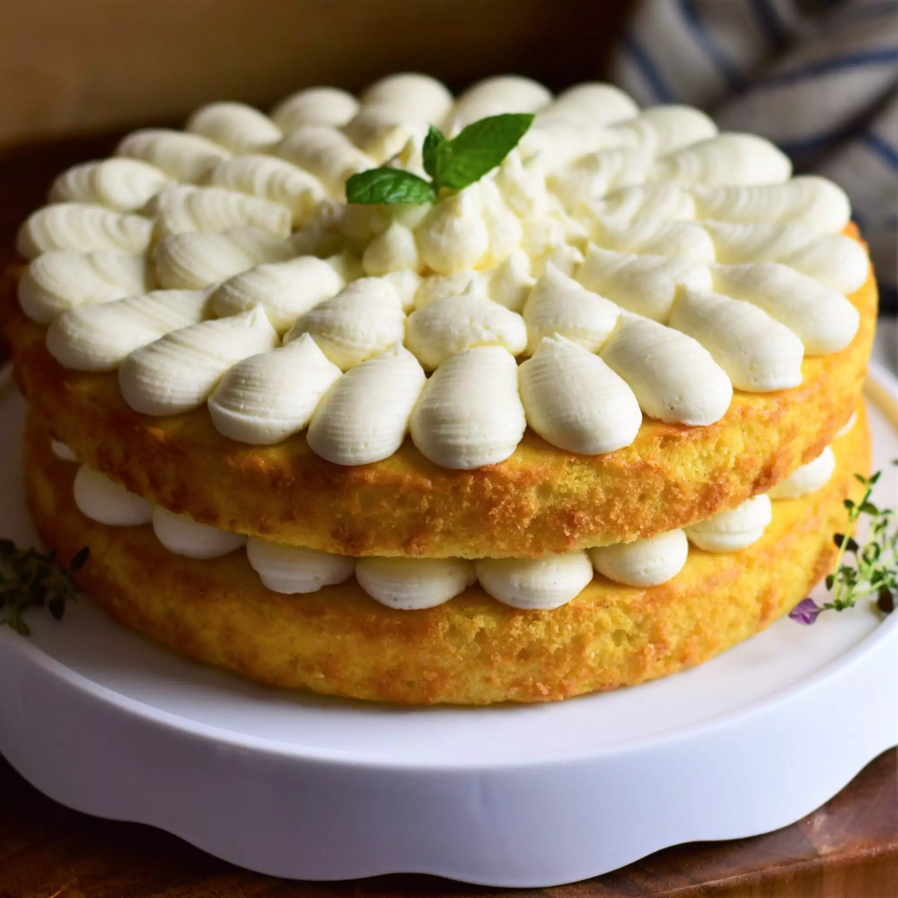

Previous page - French Vanilla Cake with French Vanilla Buttercream Frosting

The difference between French vanilla flavor and traditional vanilla flavor resides in the fact that French vanilla
is said to resemble the flavor of a rich French vanilla custard. This cake uses similar ingredients to that custard
to achieve a true French vanilla flavor without artificial ingredients.
Recipe guide :
Cooking time: 30 min
Prep time: 1 hr
ingredients for cake
- 2 cups all-purpose flour
- 2 teaspoons baking powder
- ¾ teaspoon salt
- ⅛ teaspoon ground nutmeg
- 1 ¼ cups white sugar
- ¾ cup unsalted butter, softened
- 3 large egg yolks, at room temperature
- 2 large eggs, at room temperature
- 1 (7 inch) vanilla bean
- 2 teaspoons pure vanilla extract
- ¼ teaspoon almond extract
- ¾ cup whole milk, at room temperature
- ½ cup sour cream, at room temperature
ingredients for frosting
- ⅓ cup heavy cream
- 1 cup unsalted butter, softened
- 4 cups sifted powdered sugar
- 1 teaspoon vanilla extract
- ⅛ teaspoon salt
Steps
- Preheat the oven to 350 degrees F (175 degrees C). Grease two 9-inch round cake pans and line the bottoms with
parchment paper.
- Whisk together flour, baking powder, salt, and nutmeg in a bowl until well combined.
- Cream together white sugar and butter in a large bowl with an electric mixer on medium-high speed until light
and fluffy, about 3 minutes. Add in egg yolks and beat until incorporated. Add in whole eggs, 1 at a time, beating
well after each addition. Beat mixture on medium-high speed until very fluffy, and mixture has lightened in color,
3 to 5 minutes more.
- Slice vanilla bean in half lengthwise. Use the back of a knife to scrape seeds out of both halves, and add seeds
to the butter mixture. Set vanilla bean pod aside to use for the frosting. Mix vanilla bean seeds into the butter
mixture on low speed until incorporated.
- Add vanilla and almond extracts to the batter and mix on low speed until incorporated. Pour in half of the dry
ingredients and mix until combined. Add milk and sour cream and mix until combined. Pour in remaining dry
ingredients and mix until just combined. Divide batter evenly between the cake pans and smooth into even layers.
- Place pans into the preheated oven and bake until centers of the cakes spring back lightly when touched, 30 to
35 minutes. Remove from oven and allow cakes to cool in pans for 15 minutes before running a knife carefully
around the edges of the pans to loosen. Transfer cakes to a wire rack to cool completely.
- While cakes are in the oven, begin making the frosting. Add reserved vanilla bean pod to a small saucepan and
pour in heavy cream. Place pan over low heat and cook until mixture is just warm, about 5 minutes. Remove pan from
heat and allow mixture to sit at room temperature for about 30 minutes before placing into the refrigerator until
chilled, about 30 minutes more.
- When heavy cream mixture is chilled, finish the frosting. Place 1 cup butter into a large bowl and beat on high
speed until smooth and creamy, about 3 minutes. Mix in powdered sugar gradually, 1 cup at a time, mixing well
after each addition.
- Remove vanilla bean pod from chilled heavy cream. Discard vanilla bean pod. Pour heavy cream into the
butter-powdered sugar mixture. Add in vanilla extract and salt. Beat mixture on low speed until cream is
incorporated, then turn mixer speed up to medium-high and continue to beat until frosting is light and fluffy,
about 3 to 5 minutes more.
- Pipe a layer of frosting to the top of one of the cakes and set 2nd cake on top. Frost cake as desired with
remaining frosting.
Cook's notes
The frosting amount is enough to frost the cake in the "naked" style as shown in the picture. If you wish to have a
fully covered cake, double the amount of frosting.
The longer you allow the vanilla bean pod to sit in the heavy cream, the stronger the vanilla flavor will be. You
can let it sit in the cream overnight and make the frosting the following day for a really deliciously intense
French vanilla flavor.